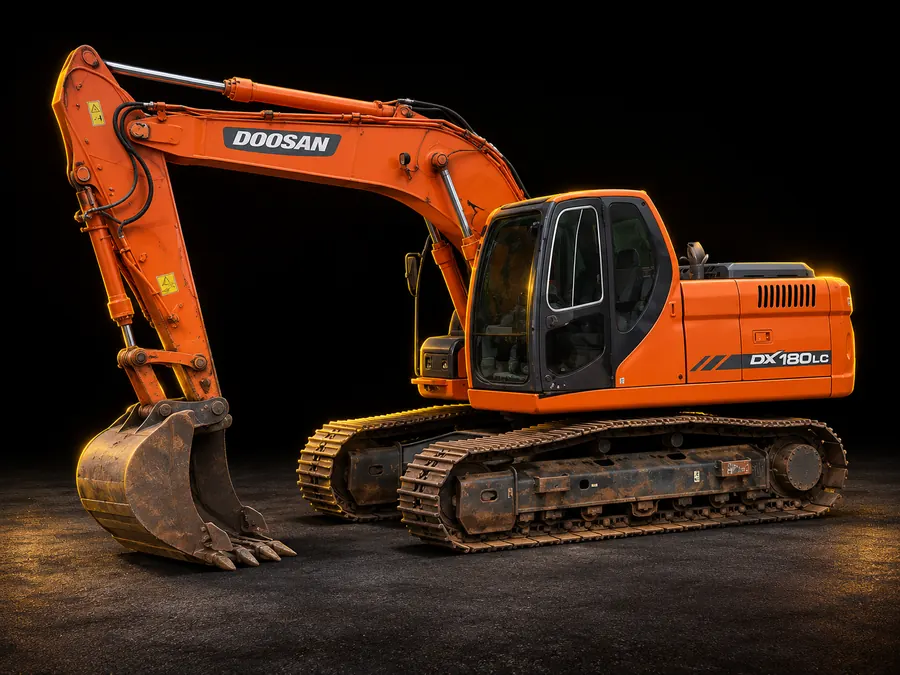
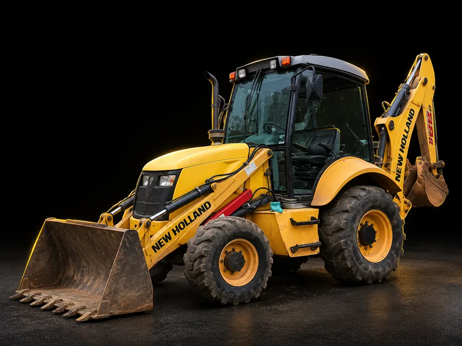
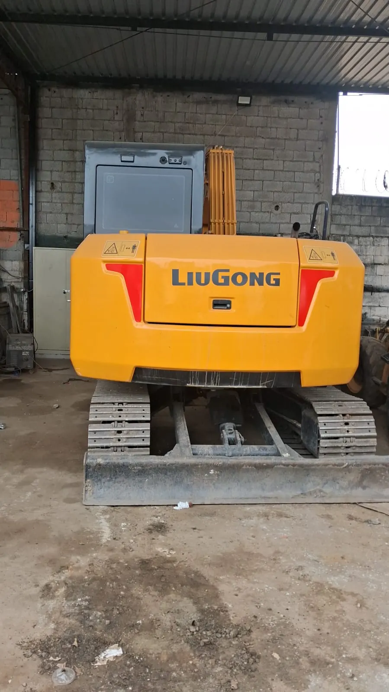
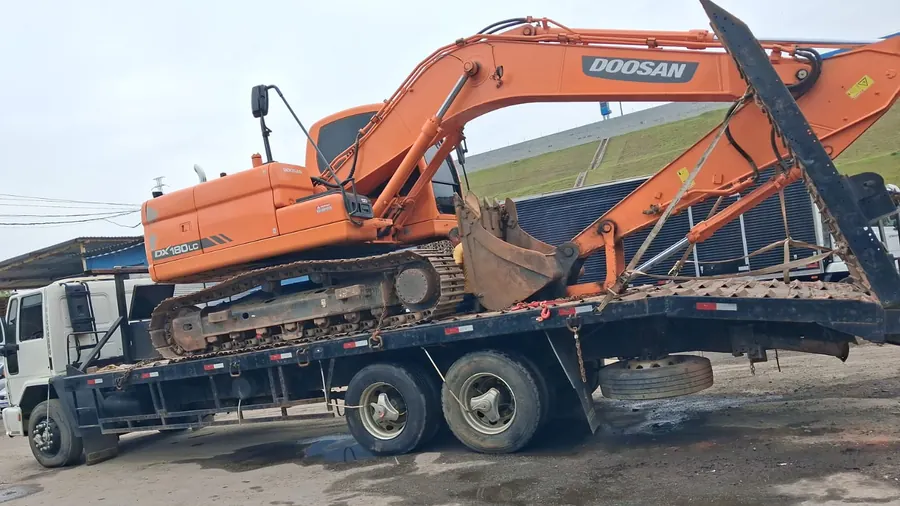

Escavadeira hidráulicaFrota própriaEscavadeira hidráulica
Doosan DX180LC · classe 18 t
Pra escavação pesada, corte de terreno, abertura de valas e carregamento de caminhões.
- Corte de terreno
- Valas
- Carregamento
Zona Leste · São Paulo · desde 2021
Escavadeira hidráulica, retroescavadeira e caminhão prancha próprios. Da limpeza do terreno ao nivelamento, com a máquina certa pra cada etapa da sua obra.
Você aluga a máquina ou contrata o serviço completo de terraplanagem. Todas as máquinas abaixo são da Barbosa e saem do nosso pátio na Zona Leste.

Escavadeira hidráulicaFrota própriaDoosan DX180LC · classe 18 t
Pra escavação pesada, corte de terreno, abertura de valas e carregamento de caminhões.

RetroescavadeiraFrota própriaNew Holland
Duas máquinas em uma: pá na frente pra carregar e espalhar terra, braço atrás pra cavar valas e buracos.

Escavadeira hidráulicaFrota própriaLiuGong
Escavadeira de esteira pra escavação e movimentação de terra.

Caminhão pranchaFrota própriaTransporte de máquinas
Leva a máquina do nosso pátio até a sua obra.
Essas são as nossas máquinas de verdade, filmadas no dia a dia.
Escolha as opções e a mensagem sai pronta. Você só confere e envia.
PRÉVIA: o número de WhatsApp da Barbosa entra aqui assim que for confirmado.
Use o orçamento rápido aqui do site ou chame no WhatsApp contando o serviço, a máquina, o período e onde é a obra. Quanto mais detalhe, mais rápido sai o valor.
Os dois. A Barbosa faz o serviço de terraplanagem e também aluga as máquinas.
Escavadeira hidráulica Doosan DX180LC, escavadeira hidráulica LiuGong, retroescavadeira New Holland e caminhão prancha pra levar as máquinas até a obra.
Temos caminhão prancha próprio pra transportar as máquinas. O frete depende da distância até a obra e entra no orçamento.
Sim. Barbosa Terraplanagem e Locação de Máquinas LTDA, CNPJ 43.334.017/0001-98, em atividade desde agosto de 2021.
Na Av. Jacu-Pêssego (Nova Trabalhadores), 1995, Cidade Antônio Estêvão de Carvalho, Zona Leste de São Paulo.
Conte o que você precisa e a gente indica a máquina ou o serviço ideal pro seu terreno.
Pedir orçamento